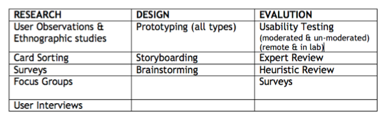

The Software Development Lifecycle
I can just start coding right?

The software lifecycle overview

Overview of the whole process

Overview of the whole process

Overview of the whole process

Overview of the whole process

Overview of the whole process

Overview of the whole process

Overview of the whole process

Big Picture
SDLC should result in a high quality system that:
- meets or exceeds customer expectations
- reaches completion within time and cost estimates
- works effectively and efficiently in the current and planned IT infrastructure
- is inexpensive to maintain and cost- effective to enhance
Development Methods
SDLC Methods
There are many different ways for a company to set up their SDLC. A lot of it depends on the kind of company it is, the type of product (or website) they are making, and the complexity or the number of people working on the product.
- Two main categories: agile ("adaptive") and waterfall ("predictive") methods.
Agile
Agile methodologies generally promote a project management process that encourages frequent inspection and adaptation, a leadership philosophy that encourages teamwork, and self-organization and accountability
- Individuals and interactions over processes and tools
- Working software over comprehensive documentation
- Customer collaboration over contract negotiation
- Responding to change over following a plan
Agile: Sprints
Sprints: a set period of time during which specific work has to be completed and made ready for review.
The duration of a sprint is determined by the scrum master, the team's facilitator. Once the team reaches a consensus for how many days a sprint should last, all future sprints should be the same. Traditionally, a sprint can last from one week to 30 days.
Agile

Agile Scrum

Scrum Intro Video
Review Exercise
DLH Page 96
Waterfall
The waterfall model shows a process, where developers are to follow these steps in order:
- Requirements specification (AKA Verification or Analysis)
- Design
- Construction (AKA implementation or coding)
- Integration
- Testing and debugging (AKA validation)
- Installation (AKA deployment)
- Maintenance
Like architects who build a house, the plan is to build the foundation first and not revisit.
Waterfall

SDLC: 1) Planning and Analysis
Important Vocabulary
When I say “software product” I mean…
One or more pieces of software code that meet a need - or want - someone has.
MVP
The minimum viable product (MVP) is a version of a new product that is created with the least effort possible to be used for validated learning about customers.
MVP

MVP

Iterating
Take one step at a time. Build one function at a time. Succeed with that function before moving to the next. Build tools that rely upon one another in a logical order.
A software product is “feasible” when…
It is economical: it costs less than it earns.
It is operational: it serves its intended purpose.
It technically works: it doesn’t crash!
Backlog
The “to do” list of your software development needs.
Metrics
A metric is a standard of measurement. Software metrics are the statistics describing the structure or contact of a program. A metric should be a real objective measurement of something such as the number of bugs per lines of code.
“ROI” (Return on Investment)
Given two features that have EQUAL value to the customer, you would first build the one that took less work.
Planning and Analysis: First Step
Who are you building this product for?
What problem is it solving?
What do you want the outcome to be? (aka why are you building this thing?)
Establishing A User Persona
Who is using your product?

Different User Personas
If you have different types of users, what are their different needs?

Research
- User Interviews
- Valdiating Your Ideas
- Re-evaluating Your Assumptions
Research

Writing Requirements
- MARKETING REQUIREMENTS: what you want to sell, and to who.
- PRODUCT REQUIREMENTS: operations your product needs to complete.
- SYSTEM REQUIREMENTS: external resources your product needs to run.
Why are requirements important?

Trying to avoid this...

Working with a PRD
SDLC: 2) Design
Two Main Types of Design
User Experience Design (UX)
Visual Design
User Experience (UX) Design
“All the expectations, all the questions, all the needs and all the ways of thinking in the users mind is like a baseball glove, the solution we come up with is like the baseball, that fits snuggly, right into that glove” (Ryan Singer).
In other words we, as designers, do all the thinking up front, so that when a user comes to our finished project, they don’t even have to think about anything, it just makes complete sense to them.
Goals of a Good UX design
- Ease of learning and relearning (learnability)
- Ease of use (efficiency)
- Consistency within and between products
- First impressions
- Error prevention and recovery
- Memorability
- Satisfaction or likeability
- Flexibility and discoverability
- Improved collaboration for groups of users
Putting it all together

UX Engineering
User Experience includes three distinct groupings:
Do's and Don'ts
Click here to read this article.
Flow Chart Types
Macro Flow

High level, main structure
User Flow

User Flow
Describes a typical experience to use an app or website to complete a task.
Flow Chart Basic Elements

- Areas
- Line Weight
- Shading
- Color
Examples!
Don't do this

- Break flows into small usecases and don't make it too complicated
A Good Example

Forget Your Passwords Flow
- Go to an online service like Gmail, Twitter or Yahoo
- Note all of the interactions in the “Forget your Password” flow.
- You should account for interactions in the flow. Error messages, success messages, password reset and confirmation, etc.
App/Site Map
The site map is a list of all main topic areas of the site, as well as sub-topics, if applicable. This serves as a guide as to what content will be on the site, and is essential to developing a consistent, easy to understand navigational system.
App/Site Map

App/Site Map

Design/Prototyping/Wireframes
- Drawing from the information gathered up to this point, it’s time to determine the look and feel of your site.
- Target audience is one of the key factors taken into consideration. It is also important to leave your own creative mark.
- Wireframes are created for the purpose of arranging elements to best accomplish a particular purpose. The wireframe depicts the page layout or arrangement of the website’s content, including interface elements and navigational systems, and how they work together.
- Try it out: Mockingbird OR Figma
Wireframes

DLH Page 98 - 101
Your Project
Work on creating the following for your project idea:

Visual Design
Your Tasks as a Visual Designer
- Develop mood and theme(s) for the project
- Develop color scheme
- Develop typography
- Develop a visual design layout for mobile, tablet, and desktop platforms including any any all images
Design Principles
Read here
How to choose a font?
More hereColor Theory and Material Design
You can learn about colors here and about Google's design here
Thinking about the Developers:
Important to make sure your designs work for the people who will code them!
Read here
SDLC: 3) Development
This means coding! We will start this step in Phase 2! :)
SDLC: 4) Testing
User Testing vs Software/Quality Assurance Testing
What are the differences?
Exercise
Perform a user test on this website.
Go to the DLH Page 102 to complete the test
What is Software Quality Assurance?
SQA is the overarching and systematic process under which a customer specified product or service is created.
SQA organizes, monitors, improves and audits the product or service during every step of the software development lifecycle focusing on the prevention of problems that software development is prone to create.
What is Software Testing?
Software testing describes a series or set of planned activities, under controlled conditions, which are intentionally designed and executed to uncover failures of the product or service being developed.
Errors and bugs are brought to light with testing, and any resulting failures are recorded, detailed and forwarded back to the development team for additional review and/or repair.
"Bug?"

Check out more about Grace Hopper here
Why do companies need this?
They want to know:
- If the software they built WORKS (does the program run?)
- Where the software has BUGS (where does the software stop running? What parts of it don’t do what they’re supposed to?)
- Does it still work for everyone (if you click in an unusual place, does it still work as intended?)
- What it is missing (do you need a BACK button?)
Why does software have bugs?
- Lack of and/or poor communication between the customer and developer
- A natural result of human factors, trying to mix human nature with logical programming, compounded by the fact that multiple humans were involved in writing the code
- The gluing together of many small fragments (units) of code into one large and unwieldy program
- Misinterpretation of the requirements
- Compatibility issues between application software, operating systems and target environments
- Size and complexity of the product being developed
- Programming errors by developers when writing code
It’s not about finding WHETHER the software has defects - all software does.
It’s about finding how many bugs or defects or oversights exist and where they are.
Different Types of Testing
- Unit testing: The brick of a house
- Integration testing: The wall made of many bricks
- System testing: The whole house
- User acceptance testing: The potential buyer of the house
A Good Requirements Tester
First, look at all the requirements!
- For each requirement you are testing:
- the same meaning should be obvious to everyone in the room.
- it can produce a measurable result (so you can verify)
- it’s possible
- it’s irreplaceable with other parts of the product/design
- all the requirements together describe the whole product
A Good Requirements Tester
Second, test the development!
- You’ll need to have and know:
- how long you have for testing and when results are due
- what external resources you’ll use to test
- what functions/requirements you will test and how you will test them
- what testing instruction you’ll follow and what result you should get
Test Case
Each requirement you are testing should have all this information organized into a TEST CASE. Each testing project is a collection of TEST CASES. Expect a TEST CASE for each combination of:

Remember
We’ll always leave time between testing and the planned launch date. Why?
- Developers need time to fix bugs!
- Once things are fixed, they need to be tested again!
- The last thing you test could be the biggest problem!
You win good reviews, happy clients, and more income if you deliver:
- organized feedback
- detailed feedback
- complete feedback
- timely feedback
on the product that helps the client fix or improve it
HOW DO YOU TEST?
BE ORGANIZED
BE DETAILED
BE CONSISTENT
USE SCREENSHOTS!
As a bonus, if you run a detailed test on a product you will understand how it works almost as well as the developer who built it!
Bug Reports
In a great bug report, you will find:
- START the report with a summary of the big problem.
- DESCRIBE the steps you took to reach the problem, the environment your were using, and how it might effect a customer.
- Include things like your device type, OS version/BIOS version, browser type, connection speed and type. Make sure the problem is not you (like a weak wifi signal).
Bug Report continued
- Report problems that are REPRODUCIBLE - in other words, they will be there not matter who follows the steps you did. Make sure you can reproduce every problem at least 3 times with the process in your report.
- Still make a note if it happened once, but add that it wasn’t reproducible.
- SEPARATE each bug into a different report segment. Organize them according to how serious they are.
In an Awesome bug report, you'll find:
- LOTS of detail.
- The same names and terminology found in the product.
- A comparison of the actual results to the expected results in the test plan.
- Says, “product wasn’t doing x when y” NOT “there’s a problem.”
- Statement of Severity….
Sample severity scale:
- P0: this problem makes the product useless or makes it fail its essential function. It should be fixed ASAP and before all others.
- P1: this problem seriously affects the product’s usability and needs to be fixed as soon as P0s are fixed.
- P2: this problem results in a noticeably poor user experience. It’s still a high-priority fix.
- P3: this problem degrades the user experience in ways that are not obvious to every user, or effects only a small portion of users noticeably.
- P4: this problem results in a noticeably poor user experience (but not uselessness) for only some users or some cases. It’s still a high-priority fix.
- P5: this problem would be nice to fix but isn’t mission-critical.
Bug Report: Presentation Matters
Use neutral, descriptive statements to describe issues.
USE THE FORMAT AND TERMINOLOGY WE CREATE FOR THE PROJECT
DON’T insult individual developers or use personalized criticism
DON’T use humor or sarcasm - it won’t come across
Example Bug Report
Click hereReview
What is the most important process in a life cycle of a product and why?
The most important part of the life cycle is the requirement stage. The majority of bugs can be found in bad requirements and thus will save the company you work for millions of dollars. Bad requirements can cause confusion between teams and can create chaos at the workplace.
Review
Why would you log a defect?
It is the job of a tester to find bugs. If bugs are not logged, then there would be no record of the bug found and it would not get fixed. These errors would remain in the code when the customer received the product.
Review
What are metrics?
A metric is a standard of measurement. Software metrics are the statistics describing the structure or content of a program. A metric should be a real objective measurement of something such as number of bugs per lines of code.
Review
What are requirements?
A requirement is a guideline to what the program or product is supposed to do. Good requirement need to be clear, concise and unambiguous because there may be a large group of people that will read the requirement. A requirement also needs to be verifiable, feasible, necessary and complete.
When reading requirements, remember to ask:

Defect Lifecycle

Defect Lifecycle

Defect Lifecycle

Defect Lifecycle

Defect Lifecycle

Defect Lifecycle

Defect Lifecycle

Defect Lifecycle

Defect Lifecycle

Review Exercise
DLH Page 106
Testing Project
Introducing the tools you will be using.
- Harvest
- Airtable

Track your time!

Steps To Get Started
- Accept your invitation to AnnieCannons team
- Add Harvest as a bookmark in Chrome
- Download the Harvest App on Your Phone
A New Project

Entering Your Time

Entering Your Time
Be sure to select the correct project and task
Also, leave detailed notes on what you worked on. 1-2 sentences.
Submitting and Reviewing Time
- Go to Time --> Timesheet
- From Time --> Timesheet click the Submit for Approval button (lower right corner).
- If you’ve tracked only time, your timesheet will then submit.
- If you forget to enter hours daily, you only have until THAT FRIDAY to record those hours in Harvest. After payment is issued, we WILL NOT make corrections or adjustments.
Troubleshooting
Forgetting To Enter Time
- Do your best estimate.
- Get in the habit of always having harvest open when you are working.
- Do not track hours somewhere else and then enter them in Harvest - use Harvest first.
Troubleshooting
Leaving Your Timer On
- Harvest will send you an email
- Harvest will also show you an alert when you log back in.
- Edit the time to the best of your knowledge as soon as you can.
Number One Rule
You Don't Enter Hours On Time, You Don't Get Paid.

Practice Project
For the next week of class, track your hours in class. Keep detailed notes and keep time accurately.
AirTable

Spreadsheets with screenshots
AirTable
Sharing a Spreadsheet
Adding screenshots
Testing Project Kickoff
THE END
Thank you for your attention!